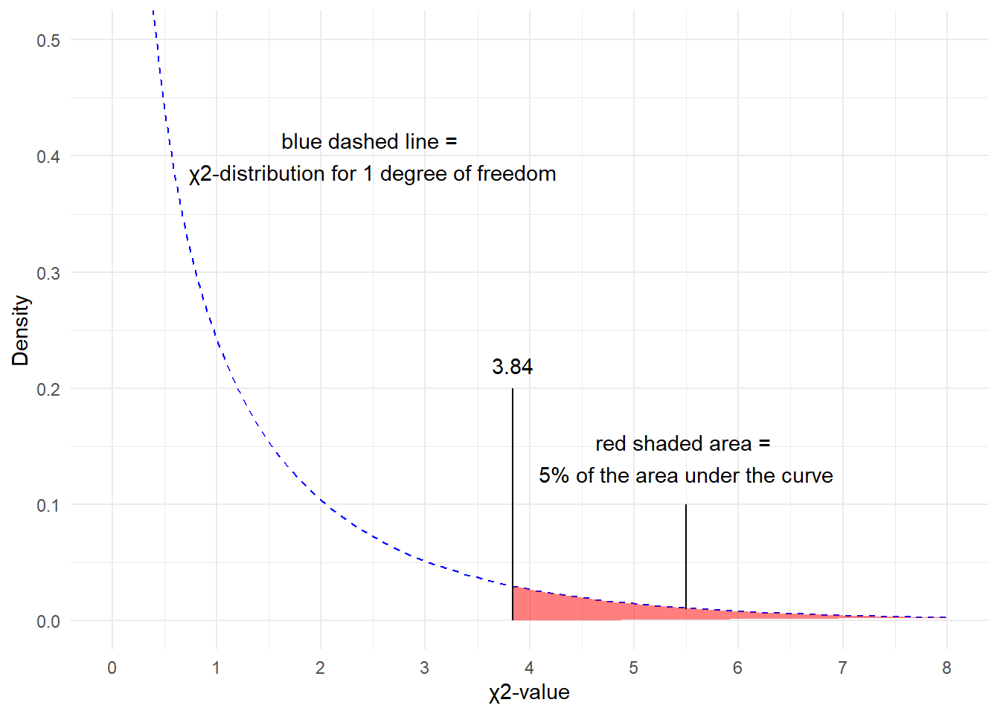

Week 6 Resenting and Analzing Data
This week, we focus on data visualization. And the aim of this week is to discuss some basic principles of data visualization as well as showcasing how to visualize data using R.
# install packages
#install.packages("ggplot2")
#install.packages("vip")
#install.packages("dplyr")
# load packages
library(ggplot2)
library(vip)
library(dplyr)6.1 Basic principles of data vis
On a very general level, graphs should be used to inform the reader about properties and relationships between variables. This implies that…
- graphs, including axes, must be labeled properly to allow the reader to understand the visualization correctly and with ease.
- there should not be more dimensions in the visualization than there are in the data (unless it helps the reader to better understand or more easily interpret information shown by the visualization).
- all elements within a graph should be unambiguous.
- variable scales should be portrayed accurately (for instance, lines - which imply continuity - should not be used for categorically scaled variables).
- graphs should be as intuitive as possible and should not mislead the reader.
6.2 Creating a simple graph
When creating a visualization with ggplot, we first use the function ggplot and define the data that the visualization will use, then, we define the aesthetics which define the layout, i.e. the x- and y-axes.
library(here)
library(ggplot2)
dat <- read.delim(here("data", "week4data1.txt"), sep = "\t")
ggplot(dat, aes(x = Subject, y = TestScores))In a next step, we add the geom-layer which defines the type of visualization that we want to display. In this case, we use geom_point as we want to show points that stand for the test scores for each subject. Note that we add the geom-layer by adding a + at the end of the line!
ggplot(dat, aes(x = Subject, y = TestScores)) +
geom_point()
We can also add another layer, e.g. a layer which shows a smoothed loess line, and we can change the theme by specifying the theme we want to use. Here, we will use theme_bw which stands for the black-and-white theme (we will get into the different types of themes later).
ggplot(dat, aes(x = Subject, y = TestScores)) +
geom_point() +
geom_smooth() +
theme_bw()
# save plot
ggsave(here("images", "myplot.png"))To save a plot, we use the ggsave function after the plot as used above.
And we can store plots in objects.
ggplot(dat, aes(x = Subject, y = TestScores)) +
geom_point() +
theme_bw() -> pTo change the range of the axes, we can specify their limits in the coord_cartesian layer.
p + coord_cartesian(xlim = c(0, 55), ylim = c(0, 50))
We can also integrate plots into data processing pipelines as shown below. When you integrate visualizations into pipelines, you should not specify the data as it is clear from the pipe which data the plot is using.
dat %>%
group_by(Class) %>%
dplyr::summarise(Score = mean(TestScores)) %>%
ggplot(aes(x = Class, y = Score,
fill = Class)) +
geom_bar(stat = "identity")6.3 Line Graphs
Line graphs are used when we have numeric values that are linked in one way or another, e.g., because they display a time series (in our case we should actually not use a line graph but we do it to exemplify how it is done).
It is important that there is only one value per x-axis level for each line!
In addition, we use the facet_wrap function with the nrow argument to show the plots in 3 rows (instead of next to each other).
dat %>%
ggplot(aes(x = Subject, y = TestScores, color = Class)) +
# add geom layer with lines
geom_line() +
facet_wrap(~Class, nrow = 3)6.4 Histograms and Bar plots
Histograms summarize numeric variables by showing their distribution across bins.
Using ggplot, we specify the variable we want to summarize in the aesthetics and use the geom_histogram function to generate a histogram. And we can simply add information about a second variable by specifying this variable as the basis for the coloring of the bars (which we do by specify the fill argument).
ggplot(dat, aes(TestScores, fill = Class)) +
geom_histogram()
The creation of barplots in ggplot works just like other types of visualizations in this framework. We first define the data and the aesthetics and then use the geom_bar to create a barplot.
In the case of barplots, it is important that we only have 1 value per class so we first summarize the data before plotting it.
# bar plot
dat %>%
dplyr::group_by(Class) %>%
dplyr::summarise(Score = mean(TestScores)) %>%
ggplot(aes(x = reorder(Class, Score), y = Score, fill = Class)) +
geom_bar(stat="identity") +
theme_bw() +
# add and define text
geom_text(aes(y = Score-2, label = round(Score, 1)), color = "white", size=5) +
# add colors
scale_fill_manual(values = c("gray", "orange", "lightblue")) +
# suppress legend
theme(legend.position="none")
Compared with the pie chart, it is much easier to grasp the relative size and order of the percentage values which shows that pie charts are unfit to show relationships between elements in a graph and, as a general rule of thumb, should be avoided.
6.5 Boxplots
So far, we have plotted values but we have not plotted the underlying distributions. For instance, we have plotted mean values but not the variance within the distribution. One handy way to combine plotting general trends and their underlying distributions are boxplots.
Boxplots, or Box-and-Whisker Plots, are exploratory graphics first created by John W. Tukey and they show the relationships between categorical and numeric variables. They are very useful because they not only provide measures of central tendency (the median which is the line in the middle of the box) but they also offer information about the distribution of the data. To elaborate, fifty percent of data points fall within the box while seventy-five percent of data points fall within the whiskers (the lines which look like extended error bars): the box thus encompasses the interquartile range between the first and third quartile. The whiskers show the minimum and maximum values in the data and only outliers (data points that lie 1.5 times the interquartile range or more above the third quartile or 1.5 times the interquartile range or more below the first quartile. If the whiskers differ in length, then this means that the data is asymmetrically distributed.
# create boxplot
ggplot(dat, aes(Class, TestScores, color = Class)) +
geom_boxplot(fill=c("orange", "gray", "lightblue")) 
6.6 (Pearsons’s) Chi-Square Test
One of the most frequently used statistical test in linguistics is the \(\chi\)2 test (or Pearsons’s chi-square test, chi-squared test, or chi-square test). We will use a simple, practical example to explore how this test works. In this example, we will test whether speakers of American English (AmE) and speakers of British English (BrE) differ in their use of the near-synonyms sort of and kind of as in “He’s sort of stupid” and “He’s kind of stupid”. As a first step, we formulate the hypothesis that we want to test (H1) and its null hypothesis (H0). The alternative- or test hypothesis reads:
H1: Speakers of AmE and BrE differ with respect to their preference for sort of and kind of.
while the Null Hypothesis (H0) states
H0: Speakers of AmE and BrE do not differ with respect to their preference for sort of and kind of.
The H0 claims the non-existence of something (which is the more conservative position) and in our example the non-existence of a correlation between variety of English and the use of sort of and kind of. The question now arises what has to be the case in order to reject the H0 in favor of the H1.
To answer this question, we require information about the probability of error, i.e. the probability that the H0 does indeed hold for the entire population. Before performing the chi-square test, we follow the convention that the required significance level is 5 percent. In other words, we will reject the H0 if the likelihood for the H\(_{0}\) being true is less than 5 percent given the distribution of the data. In that case, i.e. in case that the likelihood for the H0 being true is less than 5 percent, we consider the result of the chi-square test as statistically significant. This means that the observed distribution makes it very unlikely that there is no correlation between the variety of English and the use of sort of and kind of.
Let us now assume that we have performed a search for sort of and kind of in two corpora representing American and British English and that we have obtained the following frequencies:
Hedge | BrE | AmE |
kindof | 181 | 655 |
sortof | 177 | 67 |
In a first step, we now have to calculate the row and column sums of our table.
Hedge | BrE | AmE | Total |
kindof | 181 | 655 | 836 |
sortof | 177 | 67 | 244 |
Total | 358 | 722 | 1,080 |
Next, we calculate, the values that would have expected if there was no correlation between variety of English and the use of sort of and kind of. In order to get these expected frequencies, we apply the equation below to all cells in our table.
\[\begin{equation} \frac{Column total*Row total}{Overall total} \end{equation}\]
In our example this means that for the cell with [+]BrE [+]kindof we get:
\[\begin{equation} \frac{836*358}{1080} = \frac{299288}{1080} = 277.1185 \end{equation}\]
For the entire table this means we get the following expected values:
Hedge | BrE | AmE | Total |
kindof | 277.11850 | 558.8815 | 836 |
sortof | 80.88148 | 163.1185 | 244 |
Total | 358.00000 | 722.0000 | 1,080 |
In a next step, we calculate the contribution of each cell to the overall \(\chi\)2 value (\(\chi\)2 contribution). To get \(\chi\)2 contribution for each cell, we apply the equation below to each cell.
\[\begin{equation} \frac{(observed – expected)^{2}}{expected} \end{equation}\]
In our example this means that for the cell with [+]BrE [+]kindof we get:
\[\begin{equation} \frac{(181 – 277.1185)^{2}}{277.1185} = \frac{-96.1185^{2}}{277.1185} = \frac{9238.766}{277.1185} = 33.33868 \end{equation}\]
For the entire table this means we get the following \(\chi^{2}\) values:
Hedge | BrE | AmE | Total |
kindof | 33.33869 | 16.53082 | 49.86951 |
sortof | 114.22602 | 56.63839 | 170.86440 |
Total | 147.56470 | 73.16921 | 220.73390 |
The sum of \(\chi\)2 contributions in our example is 220.7339. To see if this value is statistically significant, we need to calculate the degrees of freedom because the \(\chi\) distribution differs across degrees of freedom. Degrees of freedom are calculated according to the equation below.
\[\begin{equation} DF = (rows -1) * (columns – 1) = (2-1) * (2-1) = 1 * 1 = 1 \end{equation}\]
In a last step, we check whether the \(\chi\)2 value that we have calculated is higher than a critical value (in which case the correlation in our table is significant). Degrees of freedom are relevant here because the critical values are dependent upon the degrees of freedom: the more degrees of freedom, the higher the critical value, i.e. the harder it is to breach the level of significance.
But why do the degrees of freedom matter?
The simple answer is that the \(\chi\)-distribution differs based on the degrees of freedom which then affects the probability of a \(\chi\)-value. Have a look at the graph below to see how the degrees of freedom affect the shape of the \(\chi\)-distribution.
Since there is only 1 degree of freedom in our case, we need to check the critical \(\chi\)-value foe 1 degree of freedom and a significance level of \(\alpha\) = 5 percent.
qchisq(p=.05, df=1, lower.tail=FALSE)## [1] 3.841459What does this critical value mean?

The critical values shows that if we get a value higher than the critical value, we have to reject our H0 and can consider our result to be statistically significant because the likelihood of obtaining our or a more extreme result is lower than 5%.
You can also check the critical values in the table below. as we are dealing with 1 degree of freedom, only the first column in the table of critical values below is relevant for us.
DF | p<.05 | p<.01 | p<.001 |
1 | 3.84 | 6.64 | 10.83 |
2 | 5.99 | 9.21 | 13.82 |
3 | 7.82 | 11.35 | 16.27 |
4 | 9.49 | 13.28 | 18.47 |
5 | 11.07 | 15.09 | 20.52 |
Since the \(\chi\)2 value that we have calculated is much higher than the critical value provided for p<.05, we can reject the H0 and may now claim that speakers of AmE and BrE differ with respect to their preference for sort of and kind of.
Before we summarize the results, we will calculate the effect size which is a measure for how strong the correlations are.
6.6.1 Effect Sizes in Chi-Square
Effect sizes are important because they correlations may be highly significant but the effect between variables can be extremely weak. The effect size is therefore a measure how strong the correlation or the explanatory and predictive power between variables is.
The effect size measure for \(\chi\)2 tests can be either the \(\phi\)-coefficient (phi-coefficient) or Cramer’s \(\phi\) (Cramer’s phi). The \(\phi\)-coefficient is used when dealing with 2x2 tables while Cramer’s \(\phi\) is used when dealing with tables with more than 4 cells. The \(\phi\) coefficient can be calculated by using the equation below (N = overall sample size).
\[\begin{equation} \phi = \sqrt{\frac{\chi^{2}}{N}} \end{equation}\]
In our case, this means:
\[\begin{equation} \phi = \sqrt{\frac{220.7339}{1080}} = \sqrt{0.2043832} = 0.4520876 \end{equation}\]
The \(\phi\) coefficient varies between 0 (no effect) and 1 (perfect correlation). For the division into weak, moderate and strong effects one can follow the division for \(\omega\) (small omega), so that with values beginning with .1 represent weak, values between 0.3 and .5 represent moderate and values above .5 represent strong effects (Bühner and Ziegler 2009, 266). So, in this example we are dealing with a medium-sized effect/correlation.